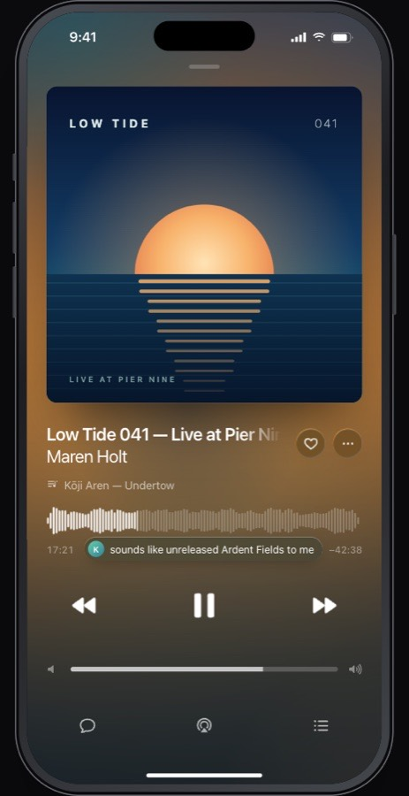

1
Copper line-art
The welcome screen's procedural jack and cable contours draw themselves on as the page loads.
★ Recommended heroBrand-led
sounding.forbes.red
SoundingFeaturesPlatformsPrivacyTestFlight
iPhone · iPad · Watch · Apple TV · Mac
Plug in.
Turn it up.
An independent SoundCloud client with the waveform, timed comments and tracklists for every mix. No servers. No accounts of its own.
Join the TestFlightComing to the App Store
Now Playing
The whole mix, and everyone listening to it.
- Waveform with comments pinned to the second
- Tracklist highlights the track that's playing
- Identify names the ID with ShazamKit
- Output moves it to the Apple TV

Palette (from SoundingLineArt.swift)
groundcopperbrassverdigrisrosemass
Dark ground
Type
SF Pro DisplayBold, tight, for headlines
SF Pro Textfor body, 17 px
Motion
Contours draw on with a 70 ms stagger over 2.6 s, once. The colour masses fade in. Under reduced motion it's a still. No scroll-jacking.
Page structure
- Hero: line art, "Plug in. Turn it up.", TestFlight
- Now Playing, with a phone shot
- Mixes: Tracklist, Identify, Setlists
- Decks and Auto Mix
- Output and Polyphony
- Analysis and Downloads
- Platforms row
- Privacy band, then the CTA again
- FAQ, then the footer with the independence line
Speaks to
Anyone who just installed the app. The site continues the onboarding they've already seen.
Risks
- Line art doesn't show the product, so a screenshot must appear in the first scroll.
stroke-dashoffsetisn't compositor-only, which the brief's "transform and opacity only" rule forbids. Fix it with a mask reveal, or accept the paint cost of about 40 paths.